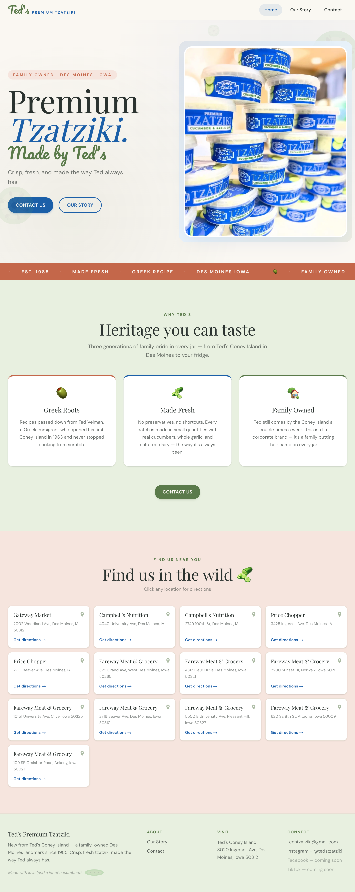
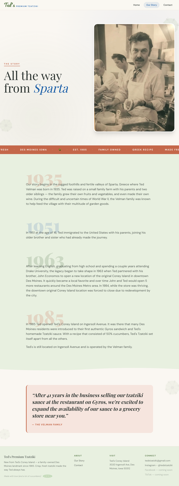
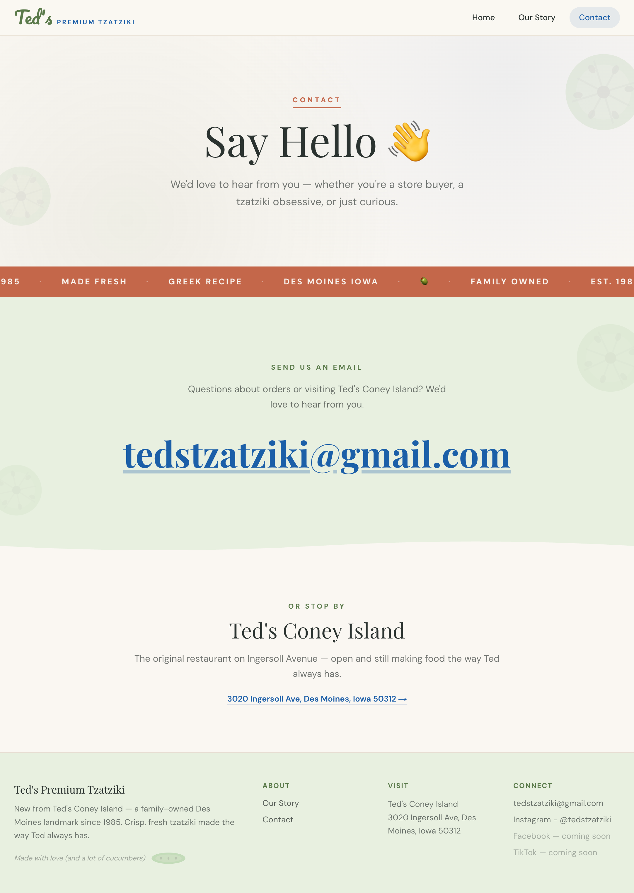
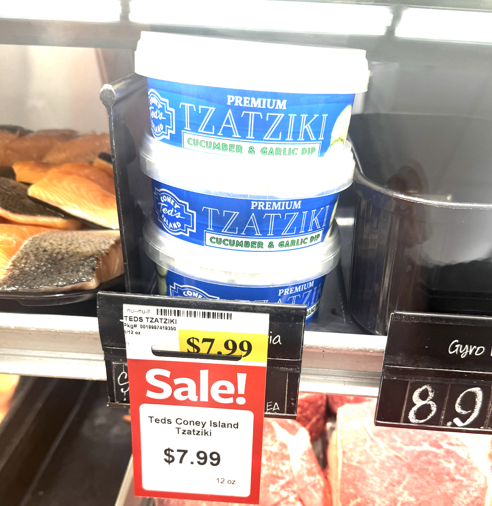
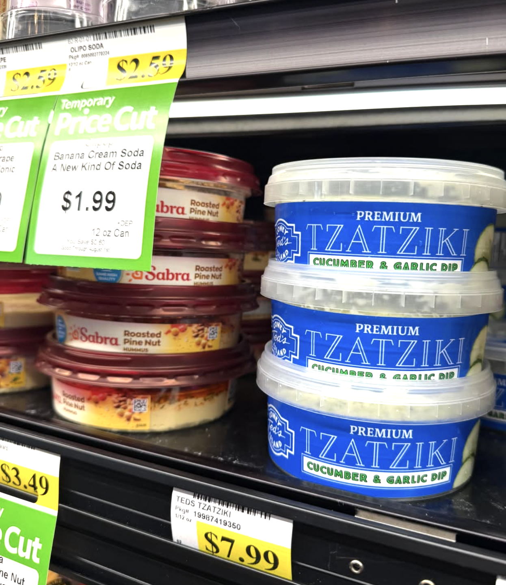
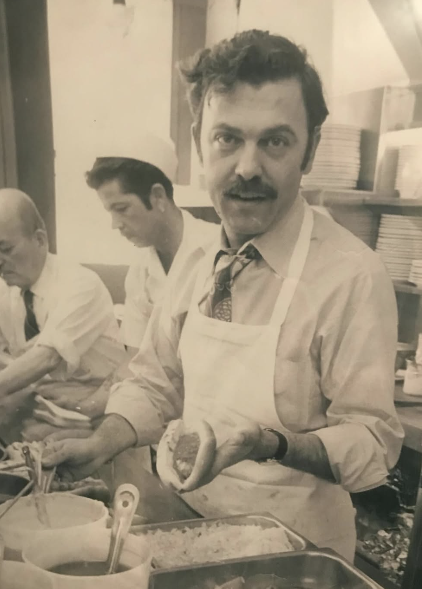

Overview
Ted's Tzatziki is a family-owned Greek tzatziki sauce brand born out of Ted's Coney Island — a Des Moines restaurant landmark that Ted Velman has run since 1985. After decades of serving his family's tzatziki recipe at the restaurant, Ted began bottling and selling it commercially. Today the brand is run by his son Stacy, who brought me on to design and build a brand and marketing website from scratch: a platform for wholesale buyers and retail customers to discover the product and reach out directly.
Client Brief & Goals
Ted's Tzatziki needed a website that could do a few things at once: tell the brand story, showcase products, and display 13 retail locations across the Des Moines metro — including Gateway Market, Campbell's Nutrition, Price Chopper, and eight Fareway Meat & Grocery locations, and lay the groundwork for future online ordering once shipping logistics were resolved. The priority was brand identity over e-commerce — this wasn't a store launch, it was a brand introduction.
Brand Storytelling
Turn a 90-year family history into a compelling narrative that builds trust with wholesale buyers and retail customers.
Future-Ready
Build a site that could grow with the business — starting as a marketing and brand introduction platform, with room to add online ordering down the road.
Stack & Why
Next.js (App Router)
Chose Next.js for its performance, routing flexibility, and seamless Vercel deployment. App Router gave clean page structure for a multi-section brand site.
Vercel + GoDaddy
Deployed on Vercel for automatic redeployment on every git push. Connected the GoDaddy domain tedstzatziki.com via A record and CNAME.
Design: Personality-Forward
The design was inspired by brands like Graza and Bitchin' Sauce — playful, story-driven, with strong visual personality rather than a generic e-commerce template. Key design decisions included a marquee ticker strip, wavy section dividers, hover animations, decorative cucumber accents, and alternating section colors in cream, sage green, and terracotta.





Turning a Timeline Into a Story

One of the most meaningful parts of the project was rewriting the client's family history — originally a bullet-point timeline — into a narrative. Born in the foothills of Sparta, Greece in 1935, Ted Velman grew up on a family farm where cucumbers were the largest crop and his grandmother's tzatziki recipe was always being quietly refined. He immigrated to the US in 1951, and in 1985 opened Ted's Coney Island on Ingersoll Avenue in Des Moines — where he introduced the gyro sandwich to the city and kept perfecting the family tzatziki. After decades of serving it at the restaurant, the sauce made the leap from the kitchen to the jar. Today Stacy runs the business day-to-day while Ted still comes in once or twice a week. That continuity — from a farm in Greece to a neighborhood restaurant to a bottled product — became the emotional core of the site.Result
A live, deployed client website at tedstzatziki.com — brand-story-forward, fully manageable by a non-technical client, and a marketing-first platform where wholesale buyers and retail customers can discover the brand and get in touch. The project covered the full lifecycle of freelance web development: client discovery, content strategy, design, full-stack development, CMS configuration, deployment, domain setup, and client handoff.
Reflections
Working with a real client adds constraints that school projects don't — content that arrived in pieces, a scope that evolved as the business figured out its next steps, and the challenge of translating a 90-year family story into something a wholesale buyer would connect with in seconds. The most interesting design problem was making a marketing site feel personal and story-driven rather than transactional — because that's exactly what this brand is.